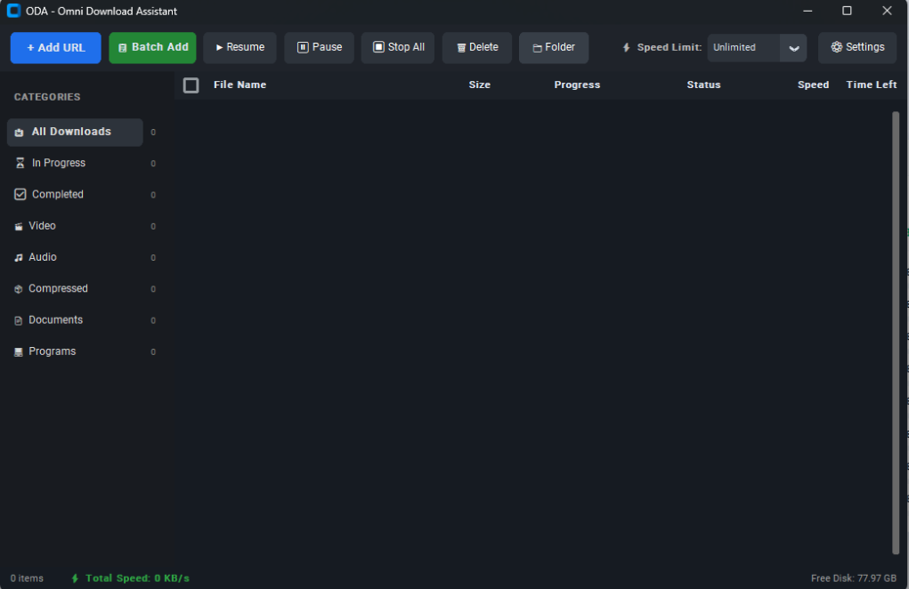

Accelerate large downloads across 32 concurrent parallel connections. Extract video streams with 1-click browser integration. Zero popups, zero ads, completely free.

Omni Download Assistant (ODA) provides high-performance multi-threaded acceleration, media sniffing, and automated file repair.
Modern interactive visualizer with concurrent data downloading.
Fast native media extraction for YouTube, Facebook, and Instagram streams powered by bundled FFmpeg.
Clean vector app integration with a clean system tray icon.
Modern dynamic detection and corrupted files auto-repair.
Three effortless steps to high-speed file acceleration.
Click any download button in your browser, or copy a URL. The browser extension sniffs the stream instantly.
ODA opens multi-chunk socket streams concurrently, downloading file segments simultaneously at line speed.
Segments are assembled seamlessly, magic bytes verified, and saved to your Downloads folder ready for use.
See how ODA delivers commercial-grade power without the commercial price tag or adware.
| Feature Capability | Omni Download Assistant (ODA) | Internet Download Manager (IDM) | Browser Downloader |
|---|---|---|---|
| Multi-Threaded Chunking | ✔ Up to 32 Parallel Chunks | ✔ Up to 32 Chunks | ✖ Single Stream (1x) |
| Price & Licensing | ✔ 100% Free Forever | ✖ $24.95 / year subscription | ✔ Free |
| Popups & Annoying Ads | ✔ Zero Ads, Zero Nag screens | ✖ Nag screens on trial expiry | ✔ No ads |
| Universal Video Sniffer | ✔ YouTube 4K, FB, Reels, Audio | ✔ Supported | ✖ Not supported |
| Single-Instance Tray Lock | ✔ Clean Named Windows Mutex | ✔ Supported | ✖ N/A |
| Modern Dark & Light UI | ✔ Clean Modern Windows 11 Design | ✖ 1990s Windows 98 legacy UI | ✔ Basic |
| Extension Integration | ✔ 1-Click Chrome & Edge Integration | ✔ Chrome / Edge / Firefox | ✖ N/A |
Capture downloads instantly from Google Chrome, Microsoft Edge, Brave, and Chromium browsers. When you click any download link, ODA catches it automatically.
chrome://extensions or edge://extensions and enable Developer mode.
Compatible with Chrome 120+, Edge 120+, Brave, Opera, and all Chromium browsers.
Everything you need to know about Omni Download Assistant.